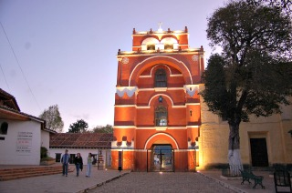
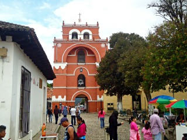
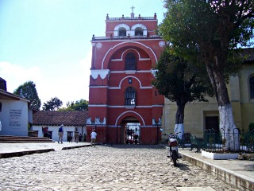
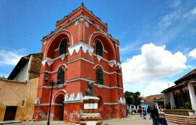
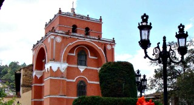

Fue erigido probablemente durante la segunda mitad del siglo XVIII y su función inicial era la de servir de campanario a la iglesia del Carmen que se encuentra a un costado.
Un vano en su parte inferior daba tal vez acceso al convento o servía de paso entre dos partes de la ciudad. Es de un estilo que recuerda al mudéjar y su imagen se ha convertido en una parte importante de la ciudad.
Es considerado "el edifico colonial más llamativo de la ciudad" y "uno de los monumentos más notables y singulares del mundo".
se ubica en la calle Miguel Hidalgo y a un costado de la calle Hermanos Domínguez.
Partiendo de la plaza de la paz viendo de frente hacia la catedral puede caminar hacia su derecha pasando entre la plaza 31 de Marzo y el ayuntamiento San Cristóbal de las casas
Como referencia encontrará el Banco Santander y Frente a este la Farmacia Similar entre estos dos lugares encontrará el andador eclesiástico donde usted podrá caaminar de frente hasta donde empieza la calle Hermanos Domínguez encontrará el Arco del Carmen.
Admirar los monumentos.
Podra tomar fotografias





posicione el mouse sobre las imágenes